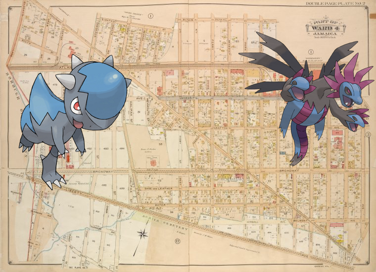

Pokémon in the NYPL archives
2018-2-17 12:10:03

Cranidos, Hydreigon +
Queens, Vol. 1, Double Page Plate No. 2; Part of Ward Four, Jamaica; [Map bounded by Borough of Brooklyn, Elderst Lane, Drew Ave., Center Ave., Snedeker Ave., Rockaway Plank Road, Dakota Ave., Shaw Ave., Nevada Ave., Montana Ave., Fulton Ave., Benedict Ave., Morris Ave., Atlantic Ave., Flushing Ave., Hopkinton Ave., Walker Ave., Belmont Ave., Woodhaven Ave., Bigelow Ave., Thrall Ave., Cherardi Ave., Canal Ave., Kimball Ave., Broadway, Grafton Ave., Beaufort Ave., Chichester Ave., Belmont Ave., Pitkin Ave., Glenmore Ave., Old South Road; Including South St., 8th St., 3rd St., 4th St., Ferry St., Canal St., S. 3rd St., S. 2nd St., Weymouth St., Halifax St., Spruce St., Digby St., West St., Shoew and Leather St., Water St., Bengal St., Togo St., Fundy St., Emerald St., Ruby St., Fundy St.; Including Pitkin PL., Park PL., Clinton PL., Bigelow PL., Thrall PL., Lutheran PL., Oyama PL.]
!